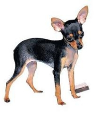

<table border="0" class="layout">
    <tbody>
        <tr>
            <td valign="top">
                <div class="holster">
                    <div class="block_container s3 b-text b-static-text user_css_12816005438" id="e_127779799366"></div>
                    <div class="block_container s3 b-image txt-center" id="e_1282814070486"><span></span></div>
                </div>
            </td>
            <td>
                <div class="holster">
                    <div class="block_container s3 b-text b-static-text user_css_12816005438" id="e_128281402345">
                        <p style="text-align: center;"><span style="color: #006600;"><span style="color: #0000ff;"><strong>Русский Той-Терьер</strong></span></span></p>
                        <p style="text-align: justify;"><span style="color: #006600;"><span style="color: #0000ff;"><strong>Из истории породы:</strong> в начале 20 века одной из самых популярных декоративных собак в России были английские той - терьеры, однако в период с 20-х по 50-е годы их племенное разведение почти не велось и поголовье сократилось до критического уровня. Начиная с середины 50-х годов, российские кинологи взялись за восстановление этой породы. Почти все собранные собаки были без родословных, многие из них были нечистопородными. Стандарт, составленный для той - терьера, оказался резко отличным от стандарта английского той - терьера по многим принципиальным позициям, и с этого момента развитие породы в России пошло своим путем. 12 октября 1958 года в г. Москве от двух гладкошерстных той терьеров, один из которых имел слегка удлиненную шерсть, родился кобель с эффектными очесами на ушах и конечностях. Было принято решение закрепить это в потомстве, и его повязали с сукой, также имевшей слегка удлиненную шерсть. Так был получен длинношерстный вариант той-терьера, который назвали московский длинношерстный той-терьер. Большую роль в его создании сыграла московский кинолог Жарова Евгения Фоминична. В ходе многолетнего изолированного развития и селекции в специфическом направлении была выведена новая порода - русский той-терьер в его двух вариациях: длинношерстный и гладкошерстный.</span></span><span style="color: #006600;"><br /><span style="color: #0000ff;"><strong>Общая характеристика: </strong>той-терьер обладает весёлым нравом, это жизнерадостные и неприхотливые собаки. Послушные, преданны хозяину. </span></span><span style="color: #006600;"><br /><span style="color: #0000ff;"><strong>Содержание и уход:</strong> не требуют частого выгуливания, идеальная собака для квартиры. Гладкошерстного той-терьера необходимо регулярно расчёсывать щёткой или специальной рукавицей. Длинношерстного той-терьера необходимо ежедневно вычёсывать щёткой и гребёнкой. Частое расчесывание предотвратит сваливание шерсти и образование колтунов.</span></span><span style="color: #006600;"><br /><span style="color: #0000ff;"><strong>Размеры: </strong>чем меньше, тем лучше.</span></span></p>
                        <p style="text-align: justify;"><span style="color: #006600;"><span style="color: #0000ff;">_______________________________________</span></span></p>
                        <p style="text-align: justify;"><span style="color: #006600;"><span style="color: #0000ff;">&nbsp;</span></span></p>
                    </div>
                </div>
            </td>
        </tr>
    </tbody>
</table>​
